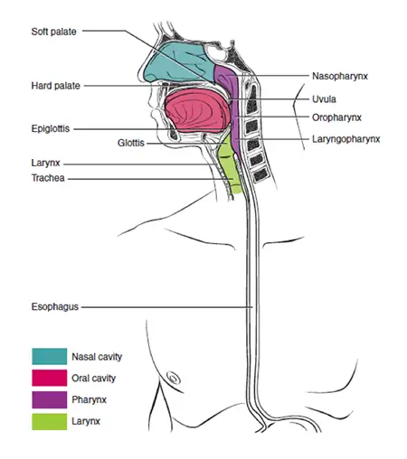
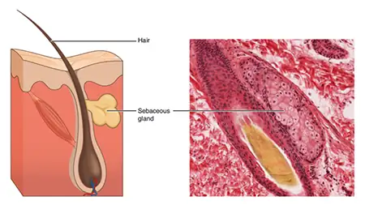

Preface¶
Learning Objectives
Human Anatomy and Physiology is designed for the two-semester anatomy and physiology course taken by life science and allied health students. The textbook follows the scope and sequence of most Human Anatomy and Physiology courses, and its coverage and organization were informed by hundreds of instructors who teach the course. Instructors can customize the book, adapting it to the approach that works best in their classroom. The artwork for this textbook is aimed focusing student learning through a powerful blend of traditional depictions and instructional innovations. Color is used sparingly, to emphasize the most important aspects of any given illustration. Significant use of micrographs from the University of Michigan complement the illustrations, and provide the students with a meaningful alternate depiction of each concept. Finally, enrichment elements provide relevance and deeper context for students, particularly in the areas of health, disease, and information relevant to their intended careers.
About OpenStax¶
OpenStax is part of Rice University, which is a 501(c)(3) nonprofit charitable corporation. As an educational initiative, it's our mission to transform learning so that education works for every student. Through our partnerships with philanthropic foundations and our alliance with other educational resource companies, we're breaking down the most common barriers to learning. Because we believe that everyone should and can have access to knowledge.
About OpenStax Resources¶
Customization¶
Anatomy and Physiology 2e is licensed under a Creative Commons Attribution 4.0 International (CC BY) license, which means that you can distribute, remix, and build upon the content, as long as you provide attribution to OpenStax and its content contributors.
Because our books are openly licensed, you are free to use the entire book or select the sections that are most relevant to the needs of your course. Feel free to remix the content by assigning your students certain chapters and sections in your syllabus, in the order that you prefer. You can even provide a direct link in your syllabus to the sections in the web view of your book.
Instructors also have the option of creating a customized version of their OpenStax book. The custom version can be made available to students in low-cost print or digital form through their campus bookstore. Visit your book page on OpenStax.org for more information.
Errata¶
All OpenStax textbooks undergo a rigorous review process. However, like any professional-grade textbook, errors sometimes occur. Since our books are web based, we can make updates periodically when deemed pedagogically necessary. If you have a correction to suggest, submit it through the link on your book page on OpenStax.org. Subject matter experts review all errata suggestions. OpenStax is committed to remaining transparent about all updates, so you will also find a list of past errata changes on your book page on OpenStax.org.
Format¶
You can access this textbook for free in web view or PDF through OpenStax.org, and for a low-cost in print.
About Anatomy and Physiology 2e¶
Coverage and Scope¶
The units of Anatomy and Physiology 2e adhere to the scope and sequence followed by most two-semester courses. The development choices for this textbook were guided by hundreds of faculty who are deeply involved in teaching this course, as well as instructional designers, academic success experts, and educational researchers who have supported A&P educators and students. These choices led to innovations in art, terminology, career orientation, practical applications, and multimedia-based learning, all with a goal of increasing relevance to students. We strove to make the discipline engaging and relevant to students, so that they can draw from it a working knowledge that will enrich their future studies and support them in their careers.
Unit 1: Levels of Organization¶
Chapters 1–4 provide students with a basic understanding of human anatomy and physiology, including its language, the levels of organization, and the basics of chemistry and cell biology. These chapters provide a foundation for the further study of the body. They also focus particularly on how the body’s regions, important chemicals, and cells maintain homeostasis.
Chapter 1 An Introduction to the Human Body
Chapter 2 The Chemical Level of Organization
Chapter 3 The Cellular Level of Organization
Chapter 4 The Tissue Level of Organization
Unit 2: Support and Movement¶
In Chapters 5–11, students explore the skin, the largest organ of the body, and examine the body’s skeletal and muscular systems, following a traditional sequence of topics. This unit is the first to walk students through specific systems of the body, and as it does so, it maintains a focus on homeostasis as well as those diseases and conditions that can disrupt it.
Chapter 5 The Integumentary System
Chapter 6 Bone and Skeletal Tissue
Chapter 7 The Axial Skeleton
Chapter 8 The Appendicular Skeleton
Chapter 9 Joints
Chapter 10 Muscle Tissue
Chapter 11 The Muscular System
Unit 3: Regulation, Integration, and Control¶
Chapters 12–17 help students answer questions about nervous and endocrine system control and regulation. In a break with the traditional sequence of topics, the special senses are integrated into the chapter on the somatic nervous system. The chapter on the neurological examination offers students a unique approach to understanding nervous system function using five simple but powerful diagnostic tests.
Chapter 12 Introduction to the Nervous System
Chapter 13 The Anatomy of the Nervous System
Chapter 14 The Somatic Nervous System
Chapter 15 The Autonomic Nervous System
Chapter 16 The Neurological Exam
Chapter 17 The Endocrine System
Unit 4: Fluids and Transport¶
In Chapters 18–21, students examine the principal means of transport for materials needed to support the human body, regulate its internal environment, and provide protection.
Chapter 18 Blood
Chapter 19 The Cardiovascular System: The Heart
Chapter 20 The Cardiovascular System: Blood Vessels and Circulation
Chapter 21 The Lymphatic System and Immunity
Unit 5: Energy, Maintenance, and Environmental Exchange¶
In Chapters 22–26, students discover the interaction between body systems and the outside environment for the exchange of materials, the capture of energy, the release of waste, and the overall maintenance of the internal systems that regulate the exchange. The explanations and illustrations are particularly focused on how structure relates to function.
Chapter 22 The Respiratory System
Chapter 23 The Digestive System
Chapter 24 Nutrition and Metabolism
Chapter 25 The Urinary System
Chapter 26 Fluid, Electrolyte, and Acid–Base Balance
Unit 6: Human Development and the Continuity of Life¶
The closing chapters examine the male and female reproductive systems, describe the process of human development and the different stages of pregnancy, and end with a review of the mechanisms of inheritance.
Chapter 27 The Reproductive System
Chapter 28 Development and Genetic Inheritance
Changes to the Second Edition¶
The Anatomy and Physiology 2e revision focuses on inclusive and equitable instruction, scientific accuracy, and enhanced instructor and student support. The improvements have been informed by extensive feedback from adopting faculty, curricular innovators, and equity experts.
The revision includes the following core changes:
- In explanations of endocrine function, reproduction, development, inheritance, and related topics, the second edition is clearer and more accurate in differentiations related to sex, and eliminates incorrect equivalencies and generalizations regarding sex and gender. OpenStax thanks Sam Long and River Suh, founders of Gender-Inclusive Biology, for their extensive guidance and support.
- Many of the illustrations have been improved to be more representative of diverse populations. We have also added photos of many conditions, symptoms, and disorders that present differently depending on skin tone. (Note that many of the illustration changes were made prior to the second edition revision.)
- In discussions and illustrations of genetics and inheritance, the text is clearer in its terminology and explanations related to parenting and parental roles.
- Several research references, data, and terminology have been improved to improve representation and currency.
These improvements are designed to create welcoming and inclusive learning experiences and promote scientifically accurate practices that students will encounter in their studies and careers. The additions and changes were made in a manner designed to enrich and support all users while maintaining the general approach of the text. Because OpenStax and our authors are aware of the difficulties posed by reorganization and renumbering, the extensive text and illustration changes have been implemented within the existing structure and organization of the book. A detailed transition guide will be available within the book’s Instructor Resources at OpenStax.org.
Pedagogical Foundation and Features¶
Anatomy and Physiology 2e is designed to promote scientific literacy. Throughout the text, you will find features that engage the students by taking selected topics a step further.
- Homeostatic Imbalances discusses the effects and results of imbalances in the body.
- Disorders showcases a disorder that is relevant to the body system at hand. This feature may focus on a specific disorder or a set of related disorders.
- Diseases showcases a disease that is relevant to the body system at hand.
- Aging explores the effect aging has on a body’s system and specific disorders that manifest over time.
- Career Connections presents information on the various careers often pursued by allied health students, such as medical technician, medical examiner, and neurophysiologist. Students are introduced to the educational requirements for and day-to-day responsibilities in these careers.
- Everyday Connections tie anatomical and physiological concepts to emerging issues and discuss these in terms of everyday life. Topics include “Anabolic Steroids” and “The Effect of Second-Hand Tobacco Smoke.”
- Interactive Links direct students to online exercises, simulations, animations, and videos to add a fuller context to core content and help improve understanding of the material. Many features include links to the University of Michigan’s interactive WebScopes, which allow students to zoom in on micrographs in the collection. These resources were vetted by reviewers and other subject matter experts to ensure that they are effective and accurate. We strongly urge students to explore these links, whether viewing a video or inputting data into a simulation, to gain the fullest experience and to learn how to search for information independently.
Dynamic, Learner-Centered Art¶
Our unique approach to visuals is designed to emphasize only the components most important in any given illustration. The art style is particularly aimed at focusing student learning through a powerful blend of traditional depictions and instructional innovations.
Much of the art in this book consists of black line illustrations. The strongest line is used to highlight the most important structures, and shading is used to show dimension and shape. Color is used sparingly to highlight and clarify the primary anatomical or functional point of the illustration. This technique is intended to draw students’ attention to the critical learning point in the illustration, without distraction from excessive gradients, shadows, and highlights. Full color is used when the structure or process requires it (for example, muscle diagrams and cardiovascular system illustrations).

By highlighting the most important portions of the illustration, the artwork helps students focus on the most important points without overwhelming them.
Micrographs¶
Micrograph magnifications have been calculated based on the objective provided with the image. If a micrograph was recorded at 40×, and the image was magnified an additional 2×, we calculated the final magnification of the micrograph to be 80×.
Please note that, when viewing the textbook electronically, the micrograph magnification provided in the text does not take into account the size and magnification of the screen on your electronic device. There may be some variation.

These glands secrete oils that lubricate and protect the skin. LM × 400. (Micrograph provided by the Regents of University of Michigan Medical School © 2012)
Answers to Questions in the Book¶
Students are provided answers to odd-numbered Interactive Link Questions, Review Questions, and Critical Thinking Questions via the Student Solution Manual on the Student Resources page. In order to allow instructors as much flexibility as possible, answers to even-numbered Interactive Link Questions, Review Questions, and Critical Thinking Questions are provided only to instructors via the Instructor Resources page.
Additional Resources¶
Student and Instructor Resources¶
We’ve compiled additional resources for both students and instructors, including Getting Started Guides, an instructor solution guide, a curated video guide, and several types of PowerPoint slides and image resources. Instructor resources require a verified instructor account, which you can apply for when you log in or create your account on OpenStax.org. Student resources include guided lecture notes, a student solutions manual, and a pronunciation guide.
Community Hubs¶
OpenStax partners with the Institute for the Study of Knowledge Management in Education (ISKME) to offer Community Hubs on OER Commons—a platform for instructors to share community-created resources that support OpenStax books, free of charge. Through our Community Hubs, instructors can upload their own materials or download resources to use in their own courses, including additional ancillaries, teaching material, multimedia, and relevant course content. We encourage instructors to join the hubs for the subjects most relevant to your teaching and research as an opportunity both to enrich your courses and to engage with other faculty. To reach the Community Hubs, visit www.oercommons.org/hubs/openstax.
Technology Partners¶
As allies in making high-quality learning materials accessible, our technology partners offer optional low-cost tools that are integrated with OpenStax books. To access the technology options for your text, visit your book page on OpenStax.org.
About the Authors¶
Senior Contributing Authors¶
J. Gordon Betts, Tyler Junior College
Peter Desaix, University of North Carolina at Chapel Hill
Eddie Johnson, Central Oregon Community College
Jody E. Johnson, Arapahoe Community College
Oksana Korol, Aims Community College
Dean Kruse, Portland Community College
Brandon Poe, Springfield Technical Community College
James A. Wise, Hampton University
Mark Womble, Youngstown State University
Kelly A. Young, California State University, Long Beach
Advisor¶
Robin J. Heyden
Contributing Authors¶
Kim Aaronson, Aquarius Institute; Triton College
Lopamudra Agarwal, Augusta Technical College
Gary Allen, Dalhousie University
Robert Allison, McLennan Community College
Heather Armbruster, Southern Union State Community College
Timothy Ballard, University of North Carolina Wilmington
Matthew Barlow, Eastern New Mexico University
William Blaker, Furman University
Julie Bowers, East Tennessee State University
Emily Bradshaw, Florida Southern College
Nishi Bryska, University of North Carolina, Charlotte
Susan Caley Opsal, Illinois Valley Community College
Boyd Campbell, Southwest College of Naturopathic Medicine and Health Sciences
Ann Caplea, Walsh University
Marnie Chapman, University of Alaska, Sitka
Barbara Christie-Pope, Cornell College
Kenneth Crane, Texarkana College
Maurice Culver, Florida State College at Jacksonville
Heather Cushman, Tacoma Community College
Noelle Cutter, Molloy College
Lynnette Danzl-Tauer, Rock Valley College
Jane Davis, Aurora University
AnnMarie DelliPizzi, Dominican College
Susan Dentel, Washtenaw Community College
Pamela Dobbins, Shelton State Community College
Patty Dolan, Pacific Lutheran University
Sondra Dubowsky, McLennan Community College
Peter Dukehart, Three Rivers Community College
Ellen DuPré, Central College
Elizabeth DuPriest, Warner Pacific College
Pam Elf, University of Minnesota
Sharon Ellerton, Queensborough Community College
Carla Endres, Utah State University - College of Eastern Utah: San Juan Campus
Myriam Feldman, Lake Washington Institute of Technology; Cascadia Community College
Greg Fitch, Avila University
Lynn Gargan, Tarant County College
Michael Giangrande, Oakland Community College
Chaya Gopalan, St. Louis College of Pharmacy
Victor Greco, Chattahoochee Technical College
Susanna Heinze, Skagit Valley College
Ann Henninger, Wartburg College
Dale Horeth, Tidewater Community College
Michael Hortsch, University of Michigan
Rosemary Hubbard, Marymount University
Mark Hubley, Prince George's Community College
Branko Jablanovic, College of Lake County
Norman Johnson, University of Massachusetts Amherst
Mark Jonasson, North Arkansas College
Jeff Keyte, College of Saint Mary
William Kleinelp, Middlesex County College
Leigh Kleinert, Grand Rapids Community College
Brenda Leady, University of Toledo
John Lepri, University of North Carolina, Greensboro
Sarah Leupen, University of Maryland, Baltimore County
Lihua Liang, Johns Hopkins University
Robert Mallet, University of North Texas Health Science Center
Bruce Maring, Daytona State College
Elisabeth Martin, College of Lake County
Natalie Maxwell, Carl Albert State College, Sallisaw
Julie May, William Carey University
Debra McLaughlin, University of Maryland University College
Nicholas Mitchell, St. Bonaventure University
Shobhana Natarajan, Brookhaven College
Phillip Nicotera, St. Petersburg College
Mary Jane Niles, University of San Francisco
Ikemefuna Nwosu, Parkland College; Lake Land College
Betsy Ott, Tyler Junior College
Ivan Paul, John Wood Community College
Aaron Payette, College of Southern Nevada
Scott Payne, Kentucky Wesleyan College
Cameron Perkins, South Georgia College
David Pfeiffer, University of Alaska, Anchorage
Thomas Pilat, Illinois Central College
Eileen Preston, Tarrant County College
Mike Pyle, Olivet Nazarene University
Robert Rawding, Gannon University
Jason Schreer, State University of New York at Potsdam
Laird Sheldahl, Mt. Hood Community College
Brian Shmaefsky, Lone Star College System
Douglas Sizemore, Bevill State Community College
Susan Spencer, Mount Hood Community College
Cynthia Standley, University of Arizona
Robert Sullivan, Marist College
Eric Sun, Middle Georgia State College
Tom Swenson, Ithaca College
Kathleen Tallman, Azusa Pacific University
Rohinton Tarapore, University of Pennsylvania
Elizabeth Tattersall, Western Nevada College
Mark Thomas, University of Northern Colorado
Janis Thompson, Lorain County Community College
Rita Thrasher, Pensacola State College
David Van Wylen, St. Olaf College
Lynn Wandrey, Mott Community College
Margaret Weck, St. Louis College of Pharmacy
Kathleen Weiss, George Fox University
Neil Westergaard, Williston State College
David Wortham, West Georgia Technical College
Umesh Yadav, University of Texas Medical Branch
Tony Yates, Oklahoma Baptist University
Justin York, Glendale Community College
Cheri Zao, North Idaho College
Elena Zoubina, Bridgewater State University; Massasoit Community College
Shobhana Natarajan, Alcon Laboratories, Inc.
Special Thanks¶
OpenStax wishes to thank the Regents of University of Michigan Medical School for the use of their extensive micrograph collection. Many of the UM micrographs that appear in Anatomy and Physiology 2e are interactive WebScopes, which students can explore by zooming in and out.
Adapted from Anatomy and Physiology 2e by OpenStax, licensed under CC BY 4.0. Access the original for free at openstax.org. Changes: converted to the web reading format of The Open Book Project.